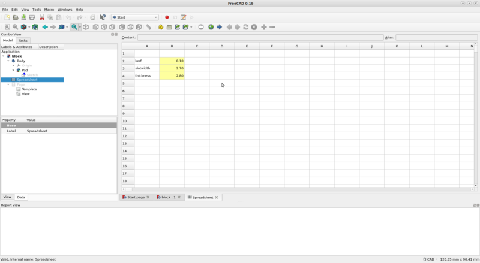

4. Computer controlled cutting
Weekly task
This week went training with vinyl cutter and laser cutter and related design software. We started studying vinyl cutter basics and after that did same for the laser cutter. Most of the time went still learning laser cutting as that process is more complex starting from the 3D-modelling process.
Vinyl cutting
Vinyl cutter is printer look-a-like machine that has small knife in order to cut rather thin and soft material. Typically that material is just vinyl tape which is cut to some stickers.
Used vinyl cutter was Roland CAMM-1 GS-24 and it was controlled by Windows workstation.

Usually cutter is connected to computer like a printer using printer driver made for the device. So instead of printing, it will cut. Printed document needs to be converted some vector format. Line width didn't seems to have any requirement at our test, it just cuts where the line center line was. Anyhow, printer driver API is for printers and does not fit 100% well other use cases like that, so be warned there may be device vendor specific tricks which are varying from manufacturer to other and so.
As a vinyl cutting exercise I made some Pokemon Go Team Valor logo stickers. I downloaded suitable existing logo which was a red colored raster image on transparent background in .png format. Then I used Inkscape Trace Bitmap tool to "cut" border of from that logo in order to get vector image from logo borders. That vector image was then cut using vinyl cutter.
Here is original image of used Valor logo

Laser cutting
Kerf
Kerf is term for "extra" material removed by the cutting process itself. On ideal case cutting process does nothing but cuts your material as desired, but on real life there is very often mechanical or some other process that removes material. That is for example saw blade or laser beam. So if your saw blade is 1mm wide it will remove that much material and it is said that 1mm kerf is removed. Same applies for laser beam too as it burns material during cutting process. Kerf should be taken into account when that small amounts of extra removed material is essential.
Kerf test for Acrylic 3mm
I ran test for 3mm Acrylic plate. I got two different results depending how I ordered those 10 small pieces. Laser beam cut/kerf is not constant - it is wider on top side and a little bit smaller on bottom side. Larger calculated kerf is got when every other piece is upside-down and it is about double of size compared to another. Larger kerf value, 0.136mm, seems to be more realistic in real life on that case - think why and how it does.
>> (100-99.45)/10
ans = 0.055000
>> (100-98.64)/10
ans = 0.13600


3D model of simple block
I used FreeCAD to design simple brick having 4 joints, one for each side. Design is about simplest possible one. First I made 2D sketch and added constraints everywhere where possible.

Spreadsheet is created basically just for the kerf parameter. It may be a bit overkill for this small design but parametric design principles were required so here it is in all flavors.

It was somehow difficult to export sketch or 3D model outlines as vector format needed for laser cutter. On ideal case you just need to save/export it some format and that's all - but it is far from that. The way I did it was I made FreeCAD TehcnicalDrawing from part and exported it as a .svg. After that you can edit it on Inkscape, change line width to 0.02mm required by laser and so...
I still wonder if there really is better tool chain to do all these tasks a bit more automatically.


Download that block FreeCAD design
Laser cutting
Laser used was Epilog Fusion M2 40.
3D model from FreeCAD was imported to laser using following steps:
- Export FreeCAD Technical Drawing to vector format .svg
- Import .svg to Inkscape
- Edit line width to 0.02mm and check outlines
- Save as .pdf
- Open .pdf on laser workstation
- Select printer and edit printer settings
- Load correct laser settings per material used
- Send printer work to laser
- On laser; load material, power, air, etc.
- JOG. It is staring point of your laser print - upper left corner of document you sent to laser. There is red laser pointer showing exact point, use joystick to adjust.
- FOCUS. It is distance between laser beam and material. Mechanical triangle tool is for that. Use joystick to adjust, moves bed up/down.
- JOB. That's is printing document queue received by the laser machine. Select your job - it is likely the last one.
- GO. Start cutting.
- Wait minute or so after laser is finished before opening the lid. That's in order to get all burning products like dangerous smoke to get removed from the machine.
Unfortunately there is very many things you can do wrong. It must be very careful with safety issues when working with laser cutter. Always do the basic checks mentioned on many places near laser (air intake, air outlet) and check the material compatibility.